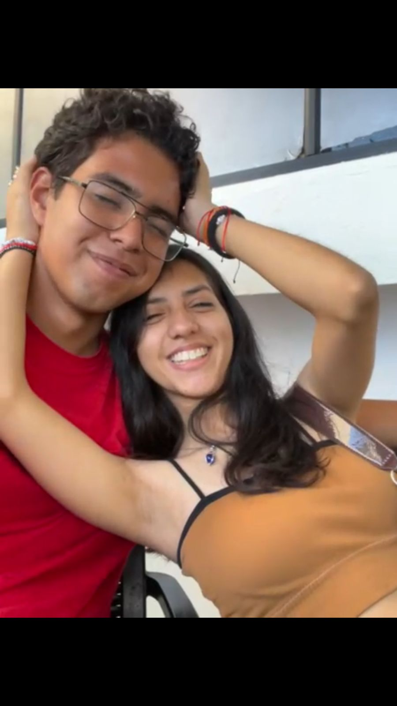
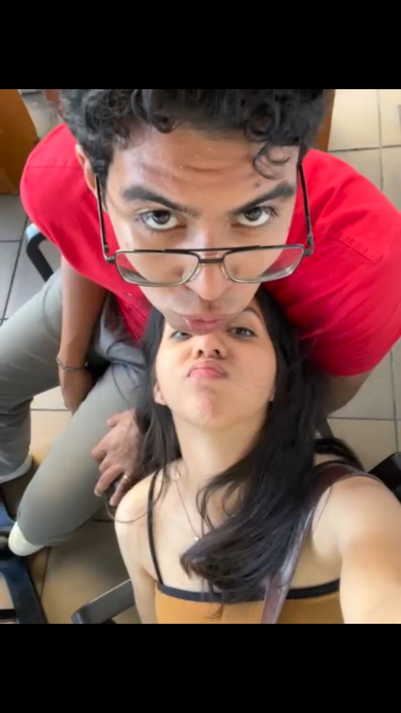
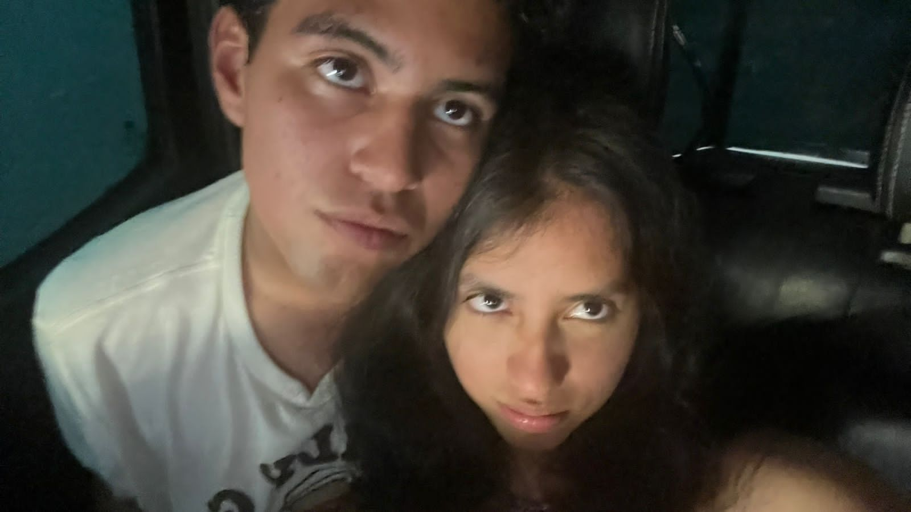

v2
Para Leslie Anaid Noboa Jaramillo
AKA: La dueña de mi corazon
Como puedes ver esta es una galeria pero no de fotos si no de mis frases favoritas de canciones en la playlist que te dedique, estas frases son las que mas me recuerdan a ti muak, este es el Diego de el 02 a las 9 y media de la noche diciendo que lo siento la tardanza se me complico un poquito y que todo esto fue con esfuerzo y dedicacion, teamo
Se cuando se rie, que en su mundo dejo huella (ah), Tan bella, ju-juro que no hay na' como ella
-Space Sex de Cosmic Kid
 Baby, you can be my summer love.
Wanna vibe with you, wanna get high with you.
Get in the car and drive with you.
Baby, you can be my summer love
Baby, you can be my summer love.
Wanna vibe with you, wanna get high with you.
Get in the car and drive with you.
Baby, you can be my summer love
bLAck pARty
 -If I got you, I dont need no one else
-If I got you, I dont need no one else
Rare de Ralph Castelli
-I know that your love, baby, is a mystery.
I want you all over me-
Morning sex de Ralph Castelli
-We're kissing in the bathroom girl, and, uh.
I hope nobody catch us.
But I kinda hope they catch us, anyway-
Les de Childish Gambino
 -Girl, you know I play my role when I'm inside that.
With my hands around your throat I know you like that.
Girl, I'll do anything.
To hear you scream my name, I love your game, I do, I do-
-Girl, you know I play my role when I'm inside that.
With my hands around your throat I know you like that.
Girl, I'll do anything.
To hear you scream my name, I love your game, I do, I do-
Poison de Brent Faiyaz
 -You don't want no complication, no.
I don't want no side 'formation (I don't want no side 'formation).
I just need to know what's happening 'cause I'm for real.
For real-
-You don't want no complication, no.
I don't want no side 'formation (I don't want no side 'formation).
I just need to know what's happening 'cause I'm for real.
For real-
Earfquake de Tyler the creator
-I think I'm falling in love.
This time I think it's (for real)-
I Think de Tyler the Creator
-I had to do it, I want your body, your music.
I bought the big one to prove it.
Look what you made.
Told you that I'm on the way.
I'm like an exit away, yep-
Love de Kendrick Lamar
-My truth too complicated to hide now.
Can I open up? Is it safe or not?.
I'm afraid a little, you relate or not?.
Have faith a little, I might take my time.
Ain't no saving face this time-
Die Hard de Kendrick Lamar
-Good, love fill my body up like a glass.
When you pour it all out.
If you know me, you know I mind.
Someone like me is hard to find-
Drive me crazy de Lil Yachty

-I want it all, every ounce of love that you got left.
You are my drug and love to death.
Feel free to fall, you are a catch.
I'm in your heart, I'm in your dream.
So fuck the world it's you and me-
ROS de Mac Miller

-Y aunque iba a ser algo pasajero, se sintió distinto.
Descifrarte, eso es un laberinto.
Tú me hiciste cosas que nunca había visto.
Dime tú si me visto y te recojo-
Pasajero de Mora
 -Bebé, yo me conformo con que estés ahí.
Cuando el Sol está a punto de salir.
Pa' escucharte respirar, pa' escucharte gemir.
Mi corazón 'taba roto y por ti volvió a latir-
-Bebé, yo me conformo con que estés ahí.
Cuando el Sol está a punto de salir.
Pa' escucharte respirar, pa' escucharte gemir.
Mi corazón 'taba roto y por ti volvió a latir-
Reina de Mora
¿Y qué hay de malo en amar?, ¿qué hay de malo en sentir?.
¿Qué hay de malo, baby, en quererte buscar pa' podértela hundir?.
Yo no soy como estos cabrones que solo lo quieren decir.
Yo siempre lo saco, pero si tú quiere' lo dejo y nos podemo' reproducir-
Tokyo de Jhayco
-Tú la musa de to' mis tema', te vo'a pasar un por ciento.
Me pregunta por qué la amo, sonriendo contesto.
Porque me siento en casa cada ve' que lo meto-
Quizas,Tal Vez de Eladio Carrion
-Tú me gusta' natural.
Acabá' de levantar, sin maquillar (yeah).
Ya yo no me tengo que empastillar.
Para sentirme en las nube'-
Me gustas natural de Eladio Carrion y Rels B
-Y hoy voy a por más y vos me hablás
Decís que no querés perturbar mi paz.
No te das cuenta las noches que me aliviás.
Con las cosas esas locas que vos me contás-
Okupa de Wos

-Tú me endulzas con tu pelo y me despego del suelo.
Si tus labios están más buenos que los jugos que hace mi abuelo, ey.
Tu cuerpo es poesía, por tus besos mataría (brr).
Cuéntame tus fantasías y practiquemos hacer hijos to' el día-
Reina Pepiada de Alvaro Diaz
-Y a mí me gustan como tú.
Valientes y obstinadas.
Con ese glamour celestial.
De nubes en los pies.
Misteriosas como el mar-
Como tu de Leon Larregui
 -Que antiguo me parece que pidas.
Algo serio de mí.
Ahora que nos empezó a gustar.
Te da miedo enamorarte perdida.
Y locamente de mí-
-Que antiguo me parece que pidas.
Algo serio de mí.
Ahora que nos empezó a gustar.
Te da miedo enamorarte perdida.
Y locamente de mí-
Las demas de Babasonicos
-Si el lenguaje es otra piel.
toquémonos más.
con mensajes de deseo.
si el lenguaje es otra piel.
toquémonos más.
con mensajes de deseo-
Otra piel de Gustavo Cerati
 -Quiero clavar mis colmillos en tu carne, morena.
Quiero hacerte el amor en una sala de espera.
Quiero ser tu condena.
Quiero verte en escena-
-Quiero clavar mis colmillos en tu carne, morena.
Quiero hacerte el amor en una sala de espera.
Quiero ser tu condena.
Quiero verte en escena-
Californica de La gusana ciega
-Perdón si estoy de nuevo acá.
Pensé que habías preguntado por mí.
Me gusta estar de nuevo acá.
Aunque no hayas preguntado por mí.
Voy a quedarme un poco acá.
Cuidarte siempre a vos en la derrota.
Hasta el final, el final-
El Tesoro de El Mato A Un Policia Motorizado
-El fin de amar.
Sentirse más.
Vivo.
El fin del mar.
Es sentirse igual.
Vivo-
Vivo de Gustavo Cerati
 -Sos el paisaje más soñado.
Y sacudiste las más sólidas tristezas.
Y respondiste cada vez que te he llamado.
Vamos despacio.
Para encontrarnos.
El tiempo es arena en mis manos-
-Sos el paisaje más soñado.
Y sacudiste las más sólidas tristezas.
Y respondiste cada vez que te he llamado.
Vamos despacio.
Para encontrarnos.
El tiempo es arena en mis manos-
Lago en el cielo de Gustavo Cerati
-Hoy hagamos la excepción.
De romper las reglas.
Tanta hambre sin satisfacción, satisfacción.
Hoy hagamos la excepción de estirar la cuerda.
Y que durar sea.
Mejor que arder, mejor que arder-
La Excepcion de Gustavo Cerati
 -Pensándolo bien.
Sé que siempre supe el desenlace.
Me pasé la vida imaginándote.
No es momento para ser cobarde-
-Pensándolo bien.
Sé que siempre supe el desenlace.
Me pasé la vida imaginándote.
No es momento para ser cobarde-
Naci para esto de Gustavo Cerati
-Siempre es hoy.
Ya es parte de mi ser.
Siempre es hoy.
Lo claro entre los dos.
Siempre es hoy.
Sos parte de mi ser.
Quiero hacer.
Cosas imposibles.
Cosas imposibles-
Cosas imposibles de Gustavo Cerati
-Estoy aprendiendo a amarte.
Flotar para no ahogarme.
Todo va tan rápido.
Un Ferrari sin frenos.
Estoy aprendiendo a amarme.
Callar para escucharte.
Esto va tan rápido.
Somos dos relámpagos-
Amor Ferrari de Luca Bocci
-Me haces volar.
Me haces soñar.
Me haces sentir tranquilo en la oscuridad.
Me haces sentir.
Me haces llorar.
Me haces sentir que ya no existe gravedad.
Me haces reír.
Me haces cantar.
Me haces pisar el suelo de la realidad.
Sentarnos frente a frente.
Y encontrarnos-
Rue Vieille du temple de Leon Larregui
-Será porque te amo, será porque es así.
Sé que no es real y nadie es propiedad.
Pero te siento mía.
Solo porque te quiero, solo porque es así.
Sé que no es real y no me perteneces-
Venus de Zoe
-Me acerco a la orilla y a jugar tu juego.
Hoy el barrio brilla, corazón de fuego.
Me voy con la soledad.
Por la vereda del mal, a buscarte
Y aunque todos van a hablar.
Yo te quiero un rato más, abrázame-
Fatal de Paco amoroso
-Cuerpos de luz, corriendo en pleno cielo.
Cristales de amor amarillo.
No dejaré que seas fría, yo podría calentarte.
Para abandonarme y renacer (Renacer, renacer)-
Amor Amarillo de Gustavo Cerati
-Dime a ver, chinita linda.
Ese tancito tuyo hace que no me rinda.
Tu sonrisa 'e Hollywood, tú ere' de revista-
Chinita Linda de Alvaro Diaz
-Dame un beso, dame ya, que yo te quiero descubrir.
Que este mundo estuvo hecho para vos y para mi-
Geografia de Indios
-Estoy contento, de tenerte cerca.
Muy cerca de mi.
Que me digas loco, que me des de besos.
Y que te rías de mi-
Locos de Leon Larregui
-Por fuera sos linda.
Pero es que por dentro no hay otra como vos.
Ni pensándola dos veces.
Sos un ser libre y te deseo lo mejor.
Por eso te quiero pa' mí los días, los años, los meses-
Morocha de Milo J
 -Pero es que, con vos, sentí algo que no había sentido.
A la noche, mis sueños son solo contigo.
En mi panza, dejaste un lindo cosquilleo.
Y, en mi mente, un tema que aún no termino-
-Pero es que, con vos, sentí algo que no había sentido.
A la noche, mis sueños son solo contigo.
En mi panza, dejaste un lindo cosquilleo.
Y, en mi mente, un tema que aún no termino-
Tus vueltas de Milo J
 -Valió la pena lo que era necesario para estar contigo amor.
Tú eres una bendición.
Las horas y la vida de tu lado nena.
Están para vivirlas pero a tu manera-
-Valió la pena lo que era necesario para estar contigo amor.
Tú eres una bendición.
Las horas y la vida de tu lado nena.
Están para vivirlas pero a tu manera-
Valio la pena Marc Anthony
 -Yo soy más tuyo que de mí mismo, pide lo que quiera' y lo consigo, eh.
Yo te voy a dar castigo hasta que elimines la palabra amigo.
Cuando toquemo' nuestras piele' y nuestros cuerpos caliente'.
Nos vamo' a sentir como los diose' se sienten.
Y no puedo creer que sea verdad-
-Yo soy más tuyo que de mí mismo, pide lo que quiera' y lo consigo, eh.
Yo te voy a dar castigo hasta que elimines la palabra amigo.
Cuando toquemo' nuestras piele' y nuestros cuerpos caliente'.
Nos vamo' a sentir como los diose' se sienten.
Y no puedo creer que sea verdad-
Tuuuyo de Bhavi
-Lost in the blue.
They don't love me like you do.
Those chills that I knew.
They were nothing without you.
And everyone else.
They don't matter now.
You're the one I can't lose.
No one loves me like you do-
Like you do de Joji
-Baby, we could try to.
Make the world spin slower.
We could take our time and.
Get to know each other over cherry wine-
Cherry wine de grent perez
 -If you've been waiting for falling in love.
Babe, you don't have to wait on me.
'Cause I've been aiming for heaven above.
But an angel ain't what I need-
-If you've been waiting for falling in love.
Babe, you don't have to wait on me.
'Cause I've been aiming for heaven above.
But an angel ain't what I need-
Sanctuary de Joji
-Brillas y brillas tan lindo.
Y brillamos juntos entre pestañas.
Divina, divina sonrisa.
Abrazo de luna, de luna llena.
Y así, juntitos los dos.
Y así, lo que se nos dio.
Y así, juntitos los dos.
Y así, lo que se nos da-
Brillas de Leon Larregui
-Fuiste una bendición, me queda agradecer.
Sos ese cuento del que no quiero saber el final.
Ese cometa que tuve suerte de presenciar.
El mundo es feo y su pasado provocó ansiedad.
Mira al infierno pero en tierra-
M.A.I de Milo J
 -Sos capaz de guiar.
Mi energía, si bajá'.
Sos el Sol que llegó pa' alumbrar.
Señorita, en su cuarto, soy solo de usted.
Si sus piernas son un juego, deseo perder (ah).
Estás haciendo hermoso este desastre.
Envidio al espejo por mirarte.
Quiero aprenderme tu cuerpo hasta el amanecer.
Algo más allá de las palabras.
Es que yo, sin vos, ya no soy nada-
-Sos capaz de guiar.
Mi energía, si bajá'.
Sos el Sol que llegó pa' alumbrar.
Señorita, en su cuarto, soy solo de usted.
Si sus piernas son un juego, deseo perder (ah).
Estás haciendo hermoso este desastre.
Envidio al espejo por mirarte.
Quiero aprenderme tu cuerpo hasta el amanecer.
Algo más allá de las palabras.
Es que yo, sin vos, ya no soy nada-
Deseo Perder de Milo J
-Bella, bella, bella nena, ven y acércate a mí, eh, ey.
Siento que tenemo' cosas que vivir, ey, yeah, yeah.
juntos esto sale mejor.
jugueteando con el amor
La mirada de bhavi